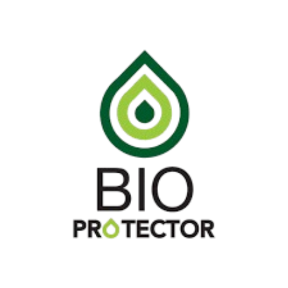

NUESTRA HISTORIA
Tradición y calidad en cada queso
MANIFIESTO
Nacimos en el corazón del Carchi, tierra de gigantes, donde la grandeza no solo está en las montañas, sino en nuestras tradiciones.
Creemos en el valor de lo auténtico, por eso elaboramos quesos únicos, llenos de sabor y orgullo ecuatoriano. Cada producto es un homenaje a nuestras raíces, hechos con amor y los mejores ingredientes, porque sabemos que la calidad no se improvisa, se cultiva.
Somos la tradición que une generaciones, y el sabor que acompaña tus momentos especiales. En Donnel, llevamos la magia de nuestra tierra a tu mesa, recordándote que lo mejor de Ecuador está aquí.
DONNEL, !LO NUESTRO ES ÚNICO!!

Nuestros Valores
Somos calidad, frescura y autenticidad, priorizando productos naturales y sostenibles. Apoyando a comunidades ganaderas locales, innovación para adaptarse a los consumidores y transparencia en los procesos.
Propósito
Crear productos de alto valor nutritivo enfocados en la tradición ecuatoriana, con un compromiso de calidad y frescura.
Experiencia
Al probar Donnel experimentas un sabor único, de alto valor nutritivo, haciendo que nuestros clientes lo recomienden y hagan recompra.
Diferenciación
Aportamos productos innovadores, que no están en la competencia, con ingredientes novedosos que se adaptan a los públicos tradicionales y modernos.
Nuestro Proceso Artesanal
Cómo transformamos la leche en deliciosos quesos
Selección de leche
Obtenemos leche fresca de vacas criadas en pastoreo de productores locales de San Gabriel.
Pasteurización
Proceso controlado que garantiza la seguridad sin comprometer el sabor natural.
Cuajado
Usamos cuajo natural para obtener la textura perfecta según cada tipo de queso.
Moldeado y prensado
Forma artesanal que da carácter único a cada pieza.
Salado
Métodos tradicionales que realzan el sabor y ayudan en la conservación.
Maduración
Cuidadoso proceso de afinado en cámaras especializadas.
Bioprotección: Nuestra Solución Natural
Mantenemos la frescura y calidad de nuestros quesos de manera natural
¿Por qué usamos Bioprotección?
Mantenemos limpia su etiqueta
Sin conservantes artificiales, solo ingredientes naturales que reconocerá.
Frescura prolongada naturalmente
Nuestros quesos mantienen su calidad y sabor por más tiempo.
Seguridad alimentaria garantizada
Protegemos sus productos sin comprometer su salud.
Los consumidores prefieren lo natural
54%
de consumidores en Latinoamérica evitan conservantes artificiales
74%
lo hacen por preocupación por su salud y familia
Beneficios Clave de Nuestra Bioprotección
Vida útil más larga
Reducción del desperdicio de alimentos manteniendo la calidad
Marca más fuerte
Etiquetas limpias que los consumidores prefieren y confían
Seguridad garantizada
Protección natural contra microorganismos patógenos